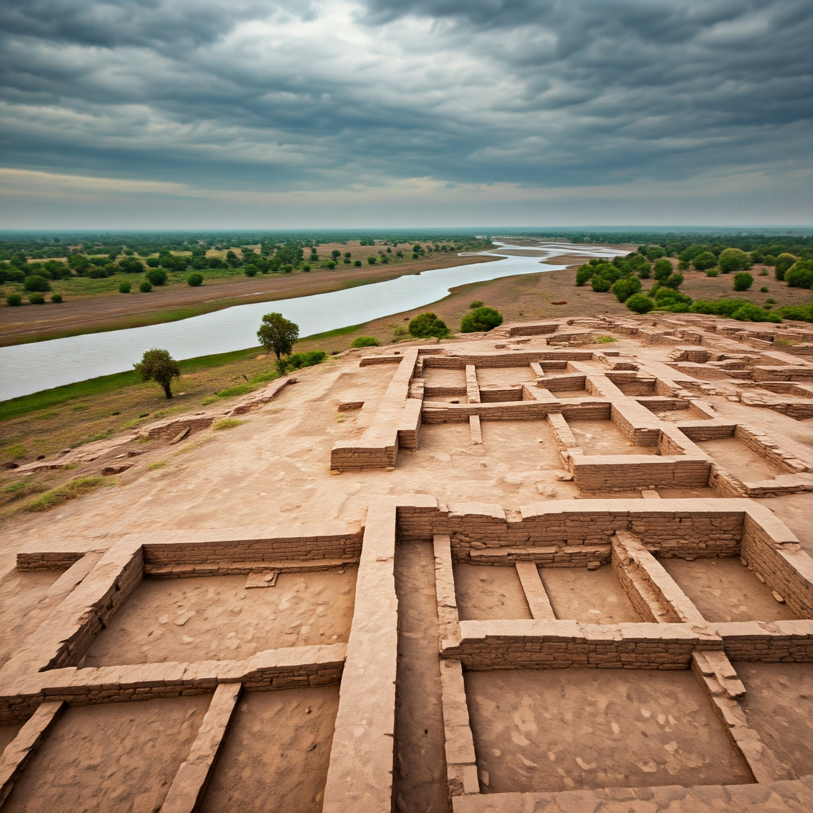
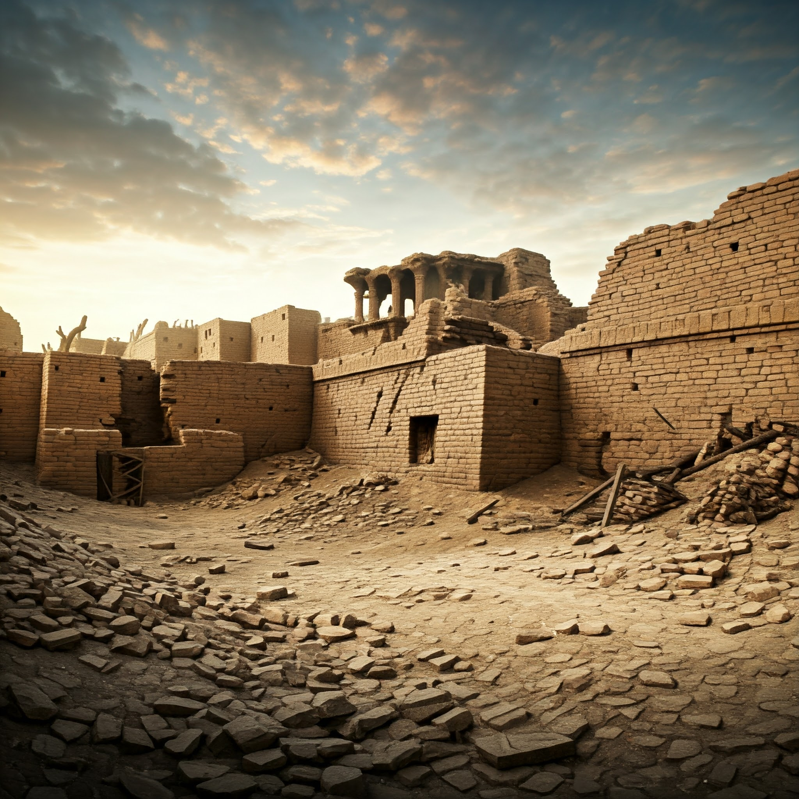
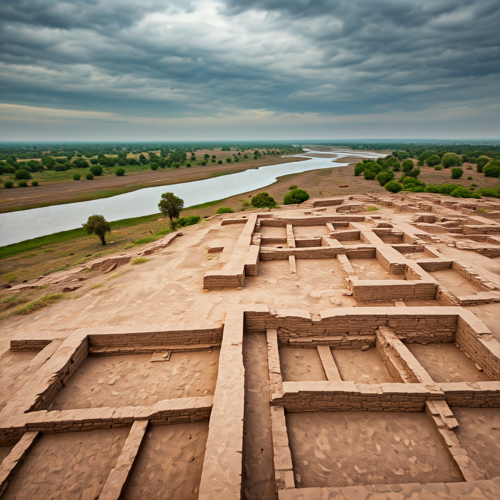
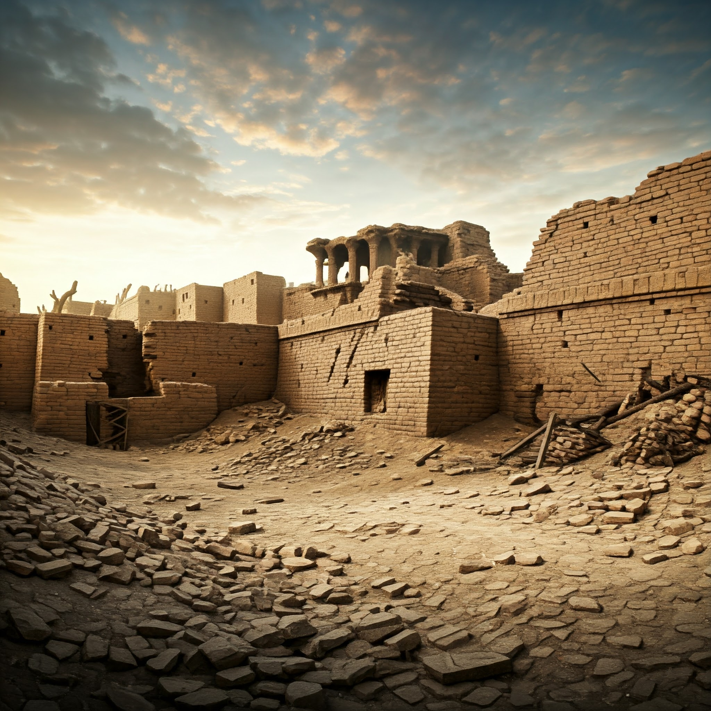

The Decline of the Indus Valley Civilization
The decline of the Indus Valley Civilization remains one of the great mysteries of ancient history. Several theories have been proposed to explain the decline, which occurred around 1300 BCE. The following are some of the most widely accepted theories:
Climate Change
One theory suggests that significant climate changes, including droughts and shifts in monsoon patterns, may have contributed to the decline by disrupting agriculture and water supplies.
Natural Disasters
Natural disasters such as floods or earthquakes could have caused significant damage to the cities, leading to their decline.
Economic Factors
Economic decline, possibly due to disruptions in trade or resource depletion, may have led to the collapse of the civilization's complex economy.
Invasion and Conflict
Some theories suggest that invasions by outside forces or internal conflicts could have played a role in the decline of the Indus Valley Civilization.
Visual Insights
Below are some visual representations of the theories regarding the decline of the Indus Valley Civilization:
 


